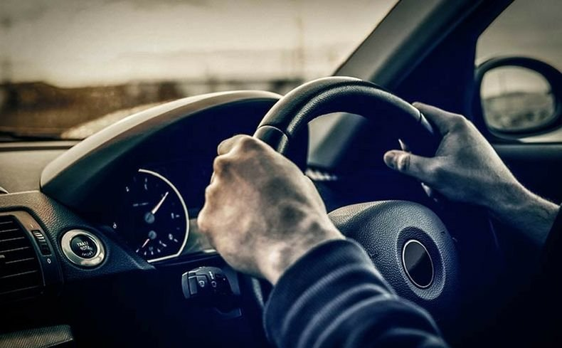

-Where there is a lot of traffic and pedestrian activity, exercise planning and awareness to the highest level.
-Be prepared for the amount of obstructions you are likely to encounter at busy times.
-In heavy traffic, your view may be restricted, especially by larger vehicles in front of you. Hold back to gain a better view ahead, especially on bends.
-Peoples judgement may change in very busy traffic. Drivers may take risks with smaller opportunities to cross.
-Opportunities to emerge into or across busy traffic can be scarce. Concentrate hard to anticipate spaces and look out for drivers holding back for you.
-It is not uncommon for other drivers to flash their headlights or wave for you to to proceed. This kind of behaviour can easily result in confusion.
-Making eye contact with other road users can help to determine intentions, especially at the low speeds and close proximity you are likely to be driving at around the city.
-If you are in very slow moving traffic and a vehicle is edging out of a side road just in front of you, it would be courteous to allow them out. Do so by checking your mirrors first, especially for cyclists passing on the inside or outside. If it seems safe, hold back and sit back or let them see you checking your mirrors as this would encourage them to proceed carefully. Consider a smile for the driver. Be especially careful where there are lanes beside you. Imagine this scenario from other perspectives.
-Driving can be stressful and other road users may behave inconsiderately. Control your own temperament and don't let your mood result in an aggressive driving style. Avoid eye contact with aggressive drivers and don't make any offensive gestures. Pull over to relax if necessary.
রিজভী ভাই ভালো লোক জয়ের মালা তারই হোক